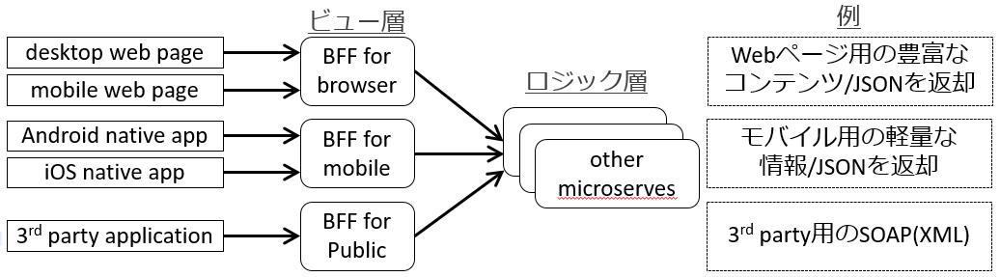
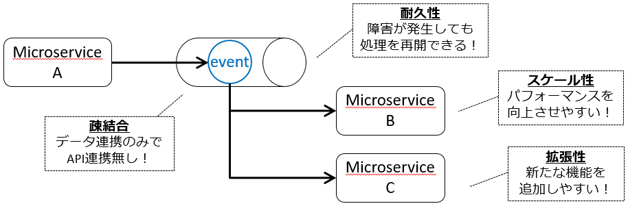
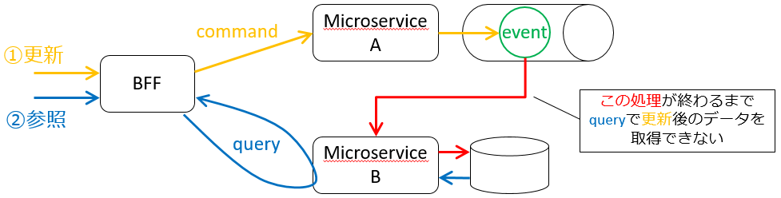

原理原則・ベストプラクティス
- SOLID から IDEALS へ
- The Twelve-Factor App から Beyond the Twelve Factor App へ
1. SOLID から IDEALS へ
オブジェクト指向設計の 5 つの原則 SOLID
- Single-responsibility principle: 単一責任の原則
- Open/closed principle: 開放閉鎖の原則
- Liskov substitution principle: リスコフの置換原則
- Interface segregation principle: インターフェース分離の原則
- Dependency inversion principle: 依存性逆転の原則
SOLID に対してマイクロサービスの特性を考慮した原則 IDEALS
- Interface segregation: インターフェイス分離
- Deployability (is on you): デプロイ容易性
- Event-driven: イベント駆動
- Availability over consistency: 整合性よりも可用性
- Loose coupling: 疎結合
- Single responsibility: 単一責任
Interface segregation: インターフェイス分離
マイクロサービスの拡張性を維持するため、 関心事は分離 する。
- API ゲートウェイパターン : 共通の入り口
- メッセージ・プロトコル変換、セキュリティ制御、スロットリングとクォータ、など
- BFF パターン : クライアントに応じた入り口
- web 用、モバイル用、3rd party 用、など

Deployability (is on you): デプロイ容易性
監視対象・デプロイ回数の 増加に対応 する。
- 変更・管理しやすいインフラ
- コンテナオーケストレーション、 FaaS 、 IaC 、など
- 可観測性
- トランザクション追跡： Zipkin 、 Jaeger 、 AWS X-Ray 、など
- 監視： New Relic 、 CloudWatch 、 Datadog 、 Prometheus 、 Grafana 、など
- ログ統合： Fluentd 、 Graylog 、 Splunk 、 ELK 、など
- サービス間連携
- サービスメッシュ（ Istio 、 Linderd 、 Consul Connect 、など）
- デプロイ・リリース戦略
- Blue/Green 、 カナリア 、 ローリングアップデート、など
- CI/CD・DevOps・GitOps
- Jenkins 、 GitLabCI/CD 、 Spinnaker 、 Weaveworks 、 Flux 、 AgroCD 、など
Event-driven: イベント駆動
スケーラビリティ と スループット を向上させる。
クライアントからのリクエスト処理には同期型と非同期型があり、 非同期 をうまく使う。
- コレオグラフィ
- マイクロサービス間を非同期連携するパターン
- キューや Pub/Sub を利用

Availability over consistency: 整合性よりも可用性
整合性ではなく、 結果整合性 を確保する。
- コマンドクエリ責務分離（ CQRS ）パターン
- CRUD を 更新（ CUD ）と参照（ R ）に分割する
- 更新（ CUD ）を command 、参照（ R ）を query という
- イベントソーシング（ ES ）パターン
- イベント を記録し、 イベント を時系列に実行する

Loose coupling: 疎結合
拡張性を維持するため、マイクロサービス間の依存性を無くす。
- Pub/Sub
- 非同期にして一度トランザクションを断つ
- データの送信者と受信者は違いを知らず、データだけの関係
- API ゲートウェイ と BFF
- 関心事の分離
- ハイパーメディア
- テキストや画像などのデータ情報をリンク（ URL ）で表現
- マクロサービス毎にデータベース
- データベースを共有しない
- Consumer Driven Contract ( CDC )
- Consumer/Provider 間の Contract
- アーキテクチャレベルの TDD
Single responsibility: 単一責任
マイクロサービスの 粒度・サイズは適切に する。
- ドメイン駆動設計（ DDD ）
2. The Twelve-Factor App から Beyond the Twelve Factor App へ
The Twelve-Factor App
クラウド時代のベストプラクティス The Twelve-Factor App
-
- Codebase （ コードベース ） : バージョン管理されている1つのコードベースと複数のデプロイ
-
- Dependencies （ 依存関係 ） : 依存関係を明示的に宣言し分離する
-
- Config （ 設定 ） : 設定を環境変数に格納する
-
- Backing services （ バックエンドサービス ） : バックエンドサービスをアタッチされたリソースとして扱う
-
- Build, release, run （ ビルド、リリース、実行 ） : ビルド、リリース、実行の3つのステージを厳密に分離する
-
- Processes （ プロセス ） : アプリケーションを1つもしくは複数のステートレスなプロセスとして実行する
-
- Port binding （ ポートバインディング ） : ポートバインディングを通してサービスを公開する
-
- Concurrency （ 並行性 ） : プロセスモデルによってスケールアウトする
-
- Disposability （ 廃棄容易性 ） : 高速な起動とグレースフルシャットダウンで堅牢性を最大化する
-
- Dev/prod parity （ 開発/本番一致 ） : 開発、ステージング、本番環境をできるだけ一致させた状態を保つ
-
- Logs （ ログ ） : ログをイベントストリームとして扱う
-
- Admin processes （ 管理プロセス ） : 管理タスクを1回限りのプロセスとして実行する
Beyond the Twelve Factor App
クラウドネイティブ時代のベストプラクティス Beyond the Twelve Factor App
-
- One codebase, one application （ 1 コードベース、 1 アプリケーション ）
- 1 アプリケーション = 1 コードベース = 1 リポジトリでバージョン管理
- 環境差分は環境変数で吸収する作りにして 1 コードベースから複数環境（ dev/tst/stg/prd ）でデプロイ可能にする
-
- API first（ API ファースト ）
- 最初に API を設計して、 API を利用する他チームとの調整を容易にする
- Swagger 、 Apiary 、 gRPC などのサポートツールを利用する
- CI により結合点を継続的にテストすることで、チームそれぞれが独立のサービスに注力できるようにする
-
- Dependency management （ 依存関係管理 ）
-
- Design, build, release, and run （ 設計、ビルド、リリース、実行 ）
- Design -> Build -> Release -> Run をそれぞれ個別のフェーズで実行する
- 自動テスト・デプロイを行い、高信頼性を保ちながら CI スピードを最大化する
- Design
- ライブラリ依存関係を宣言
- 設計は一度に全て行わず、小さな単位で設計・実装を繰り返す
- Build
- Design 時に宣言されたライブラリ依存関係を含めて CI を利用してコードを実行形式に変換
- 1 ビルドで任意の環境（ dev/tst/stg/prd ）でリリース・実行可能な状態にする
- Release
- ビルド成果物と環境毎の設定と組み合わせ、実行できる形に
- 一意のリリースバージョンを付与（セマンティックバージョニング）
- 以前のリリースバージョンにロールバックできること
- Run
- 実行形式・環境設定をコンテナに配置して、プロセスを起動・開始
- プロセスが実行されると、マネージドサービスは実行を監視し、ログを集約し、スケールアウト・インに対応する
-
- Configuration, credentials, and code （ 設定、機密情報、コード ）
-
- Logs （ ログ ）
-
- Disposability （ 破棄容易性 ）
-
- Backing services （ バックエンドサービス ）
-
- Environment parity （ 環境一致 ）
-
- Administrative processes （ 管理プロセス ）
- 管理プロセス（ cron など）はアプリケーションから分離する
- アドホックな機能呼出のためのエンドポイント（ REST など）を公開
- メインアプリからバッチ関連のコードを切り出し、別のマイクロサービスにする
- 管理タスクはマネージドサービスを利用
- 自分で実装することは避け、 AWS Lambda などを利用する
-
- Port binding （ ポートバインディング ）
- ポートバインディングはやめて、コンテナでサービスを公開する
- 1 つのコンテナ内で複数のアプリケーションを起動しないこと
- 公開するエンドポイントは、コードを変更せずに外部から設定できるようにすること
-
- Stateless processes （ ステートレスプロセス ）
-
- Concurrency （ 平行性 ）
-
- Telemetry （ テレメトリー ）
- APM （パフォーマンス）、 KPI （ビジネス指標） 、死活監視が必要
- リクエスト数、スループット、 TAT など
- ビジネス予測・分析のためのイベント・データを収集
- プロセス起動数・状態、スケーリング、ヘルスチェック結果など
- 早い段階で監視戦略を計画し、どの情報を収集・集約し、どの程度の期間・量を保存するのかを考える
-
- Authentication and authorization （ 認証・認可 ）
- クラウドネイティブアプリケーションは RBAC （ Role Based Access Control : ロールベースのアクセス制御）でエンドポイントを保護する
- どのユーザのリクエストなのか認証し、リソースへの操作を許可する
- IP での制限は管理が大変なのでやめる